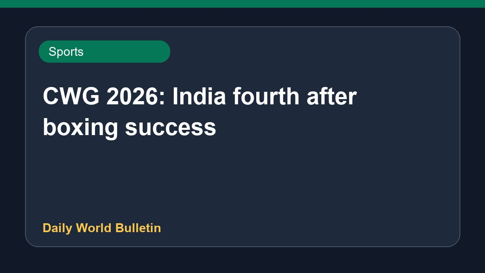

CWG 2026: India fourth after boxing success

India secured the fourth position in the medal standings at the Commonwealth Games following a remarkable campaign by the boxing contingent. Indian pugilists clinched seven gold medals and three silver medals on the tenth day of the multi-sport event in Glasgow. This record-breaking performance significantly boosted the nation's standing in the overall tally. Prominent athletes overcame various challenges, including overcoming physical injuries from hospital beds, to achieve podium finishes and bring glory to the country.
Original source: Sports News Sources
CWG 2026 Medal Tally: India in fourth spot after boxers win seven gold medals on Day 10 - Sportstar ↗
CWG 2026 Medal Tally: India in fourth spot after boxers win seven gold medals on Day 10 - Sportstar ↗